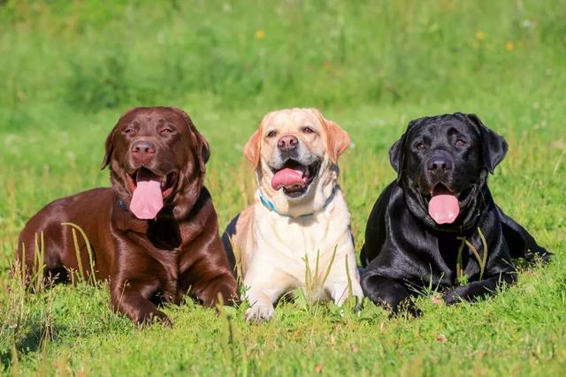
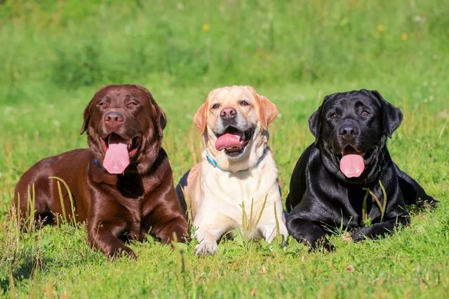
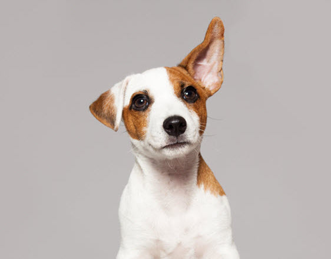
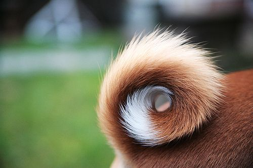

毛色

不同的狗有不同的毛皮質地，顏色和花紋。RSPO2、FGF5及KRT71三個基因控制了包括長度、彎曲程度、皮毛紋理等七種毛皮特點。某些種類的外貌有專屬名詞藉以稱呼。
常見的皮毛顏色有：
皮毛種類：
FEATURE

不同的狗有不同的毛皮質地，顏色和花紋。RSPO2、FGF5及KRT71三個基因控制了包括長度、彎曲程度、皮毛紋理等七種毛皮特點。某些種類的外貌有專屬名詞藉以稱呼。
常見的皮毛顏色有：
皮毛種類：

各種耳朵的專業術語：

相較於耳朵，不同種類的狗的尾巴在形態，長度，毛髮，位置方面的差異更加巨大。
有以下幾種：